Send Reminders Using Application-Initiation Conversations
Before You Begin
This 30-minute tutorial shows you how to use the application-initiated conversation (AIC) feature in Oracle Digital
Assistant to start SMS conversations with users.
Background
The use case for this tutorial is a dental appointment reminder service. Dental Care, a fictitious dental clinic,
wants to reduce the number of patients that don't show up for their medical treatment by reminding them about
their appointment a day or two in advance. The approach that Dental Care takes is outlined below.
A Dental Care appointment manager initiates a short message to be sent to patients that previously had their
mobile number registered.
Patients receive a SMS notification informing them about their upcoming appointments.
Opening the SMS, patients can then respond to the automated message and confirm, decline, or postpone their
appointment.
The solution consists of four main building blocks:
Twilio SMS: A short messaging service that sends user messages on behalf of Oracle Digital Assistant to
initiate a user conversation.
Digital Assistant: The instance that handles the application-initiated conversation by dispatching requests to the
skill that's referenced in the application payload.
External Application: A custom application that uses an application channel in Digital Assistant to
trigger user notifications. In this tutorial, the external application is simulated by Postman.
SMS client: The user's phone that receives the message and that becomes a messaging client for the skill.
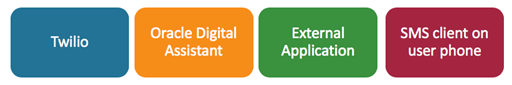
What Do You Need?
Access to Digital Assistant.
Mobile phone (a feature phone will also work).
A Twilio account. If you don't have an account, this tutorial includes steps for obtaining a trial account.
Postman or an equivalent REST client. If you don't have either, this tutorial includes steps for installing Postman.
Set Up the Dental Care Skill
For this tutorial, a starter skill named Dental Care is provided. You access the provided skill by
following the instructions below.
Open Digital Assistant in a browser.
Click
on the top left of the page to expand the side menu.
Expand Development and select Skills.
Click again to hide the side menu.
In the Skills dashboard, type dental care in the Filter field to find the starter skill.
If the Dental Care skill isn’t available in your instance, then download
DentalCare(1.0)_starter.zip, click Import Skill,
and import it into your instance.
On the Dental Care card, click Options , and then select Clone.
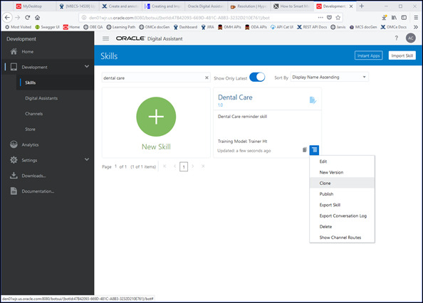
Name the skill <your initials>_DentalCare, or use any other prefix that
creates a name that's unique to the instance.
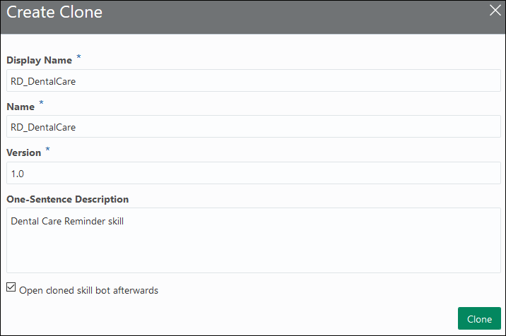
Select Open cloned skill afterwards, and then click Clone.
Ensure that Intents is selected.
Click the ConfirmAppointment intent and notice the utterances.
Similarly observe the utterances for the other intents: CancelAppointment, RescheduleAppointment,
and WelcomeMessage.
Next, click , which is in the top-right corner of the page.
In the opened dialog, keep the default settings and click Submit.
Wait a few seconds for the training to finish.
To test the skill, click Skill Tester ,
which is located near the bottom of the left navigation bar.
In the skill tester's Message field, type confirm the appointment and press Enter.
Click Reset at the top of the tester window to clear the context and history.
Next, try I want to cancel the appointment.
Finally, try can you reschedule?
Click to close the tester window.
Note: It isn’t required for a skill to be exposed in a digital assistant to become accessible for an application. Therefore, in this tutorial, you don't build a digital assistant.
Prepare Your Skill for an Application-Initiated Conversation
To enable application-initiated conversations in your skill, add a dialog flow state to initiate the conversation,
and then map a key value, which will be referenced by the external application, to this state.
Click Flows to open the dialog flow editor.
Under variables: add these two context variables to hold the patient name and appointment
time that will be sent by the external application:
patientName: "string"
appointmentTime: "string"
Tip: You can click Copy in the code box to copy its
content to your clipboard.
Indentation is important. Ensure that the variables are indented the same as iResult as shown here.
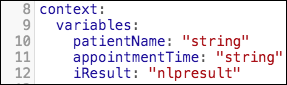
To add a state to initiate the conversation, click .
Select the User Interface category.
Select Output.
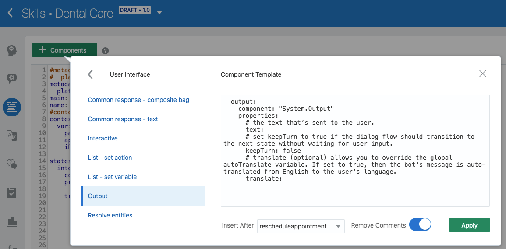
From the Insert After dropdown, select rescheduleappointment.
Ensure the Remove Comments switch is ON.
Click Apply.
Change the state name of the newly added component from output to remindermessage.
Edit the state to look like the following:
remindermessage:
component: "System.Output"
properties:
text: "Hi ${patientName.value}, your next Dental Care appointment is scheduled for ${appointmentTime.value}. Please reply to this message to confirm, cancel, or postpone your appointment."
transitions:
return: "done"
Your updated OBotML should look like this:
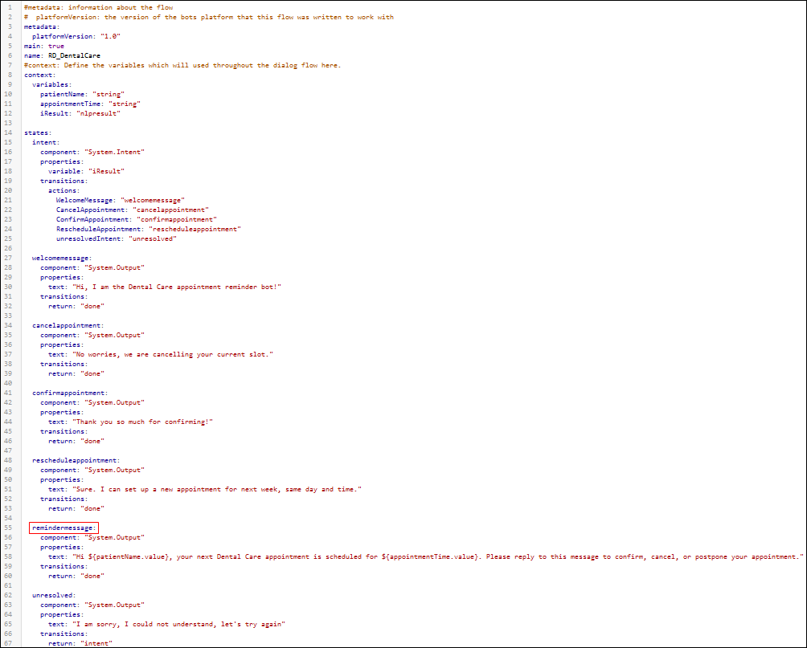
Click Validate to ensure that there are no errors in your dialog flow.
If you experience problems, you can copy the entire dialog flow code from the
dental-care-flow.txt file.
The incoming message from the external application will contain a key. To map the key to the start state, which is
remindermessage,
click Settings , and then click the Events tab.
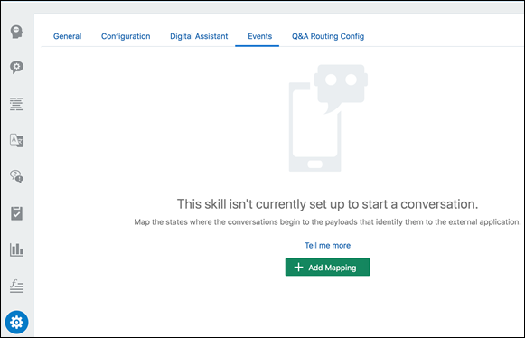
Click + Add Mapping to display the Payload type and State name fields.
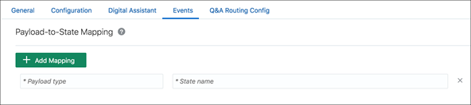
Set these values, and then press Enter:
Payload type:msgReminder
State name:remindermessage
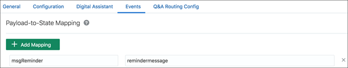
You provide the payload name to the external app rather than the actual start-state name because it’s a constant,
whereasthe name of the state can change if the dialog definition is revised.
Set Up Twilio
To use Twilio SMS as a channel you need to:
Sign up for a Twilio paid or trial account.
Obtain a Twilio number to use to configure an application channel.
Add a verified mobile number to use for a registered patient number.
Enter the required information, and then click Get Started.
When prompted, enter your mobile phone number (You need to have a verified phone number to get a Twilio number).
A verification code is sent to your mobile phone. Enter this verification code
to add your number as a verified phone number
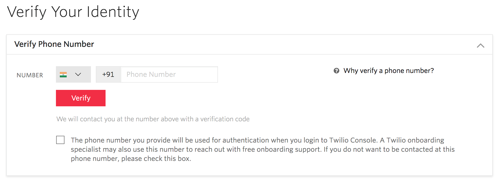
Click Skip to dashboard to move to the Twilio dashboard.
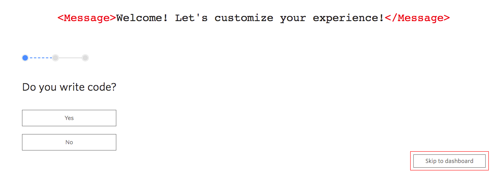
In the left navigation bar on the Twilio console, click #,
click Getting Started, and then click Get your first Twilio phone number.
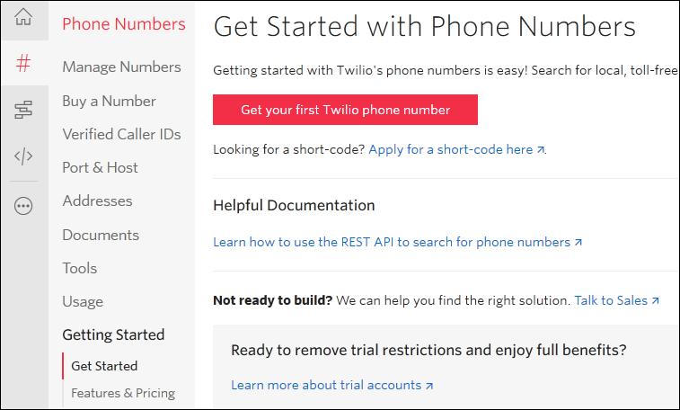
In the Your first Twilio Phone Number dialog box, click Choose this Number, or search for a different number.
Any SMS-enabled number will do. We'll refer to this number as the skill's Twilio number.
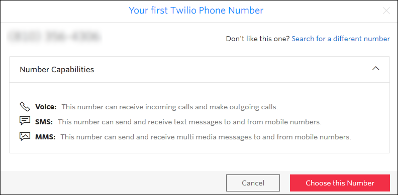
Ensure that the number you get is SMS enabled.
Note: You should choose a United States phone number as it is the simplest one to get. Numbers
from other countries often require additional proof of identity.
Make a note of the number. You'll need the number to create a Twilio user channel in
Digital Assistant.
In the left navigation bar, click the home icon to open the Dashboard page,
and then make a note of the account SID and AUTH token.
You’ll need these values to create a Twilio user channel in Digital Assistant.
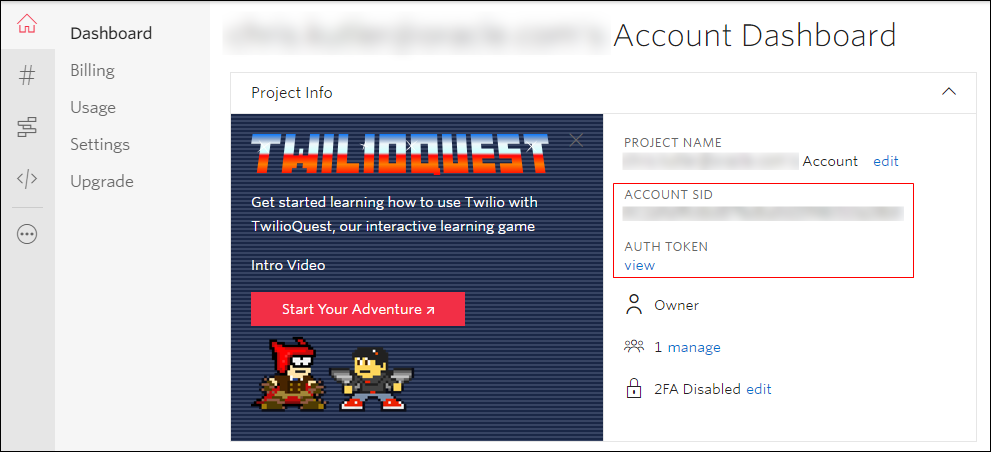
In the left navigation bar, click # to display the Phone Numbers page,
and then click Verified Caller IDs.
If your mobile number isn't on the list, click + to add a verified number
that you can send messages and make calls to.
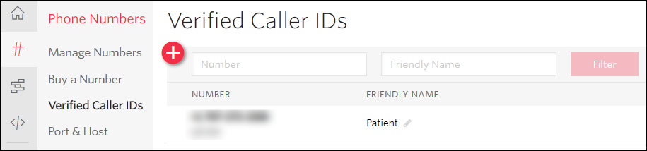
You'll use this number for the patient's registered mobile number.
Set Up Digital Assistant Channels
In this section, you’ll configure an application channel and a user channel.
The application channel enables an external application to send notifications to the Dental Care skill
so that it can trigger a conversation with a patient.
The user channel will be used to send and receive
messages via Twilio SMS channel.
So, let’s get started!
Click , click Development, and then click Channels.
Click the Applications tab.
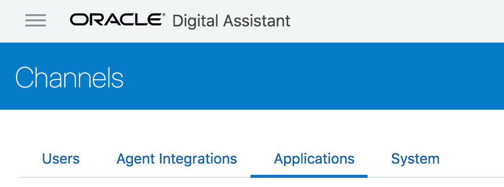
Click to enter details.
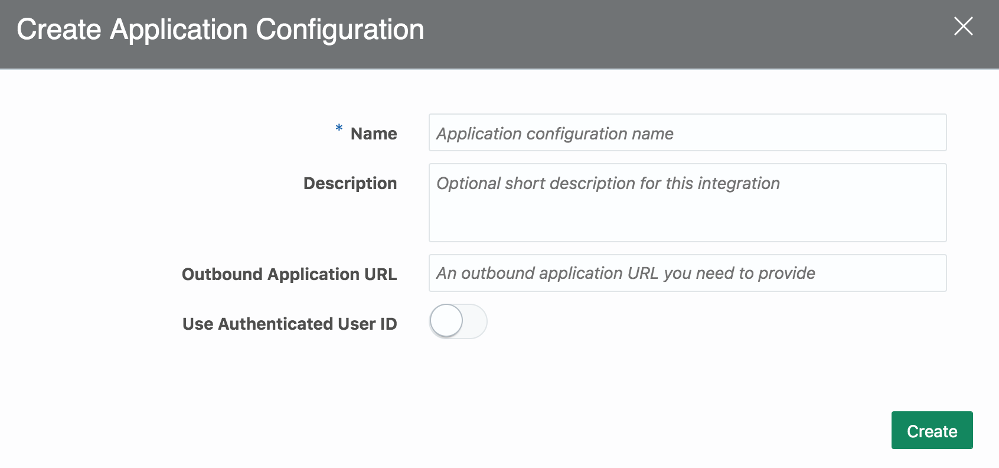
Set the name to <your initials>_DentalCare_ApplicationChannel.
The Use Authenticated User ID switch is turned OFF by default. Keep it this way and press Create.
An unbound URL and a secret key are generated for the new application channel. External applications
should use the inbound URL to send messages and should sign the message with the secret key.
Note: The Outbound URL is optional. If provided, the skill may use this URL to send information about errors.
This URL isn’t used in this tutorial.
Set the Application Enabled switch to ON to enable the channel.
Make a note of the secret key and inbound URL. You'll use these values when you initiate the conversation
from an external application, which is Postman in this tutorial.
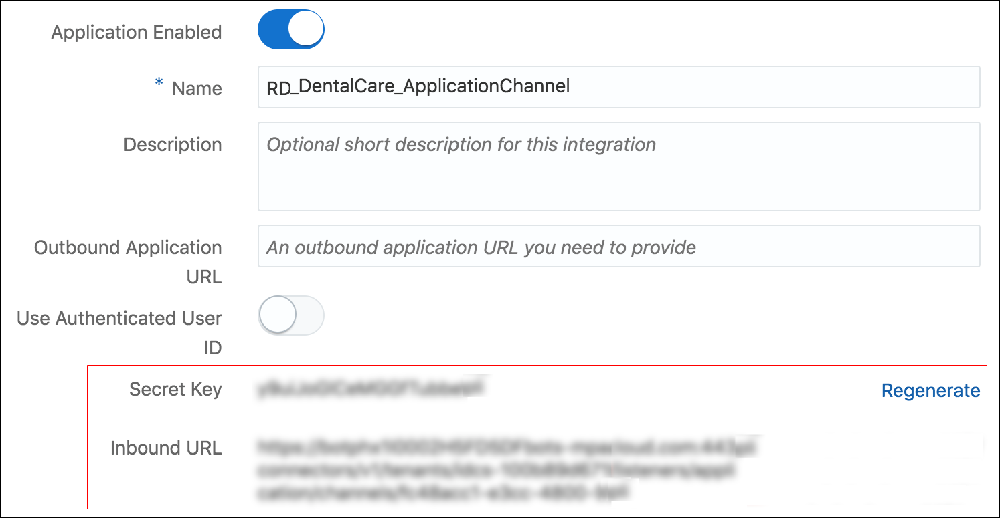
Click the Users tab to create a Twilio user channel.
Click and set these values:
Name:<your initials>_DentalCareUserChannel
Channel Type:Twilio SMS
Account SID: Your Twilio account SID
Auth Token: Your Twilio Auth Token
Phone Number: Your Twilio number
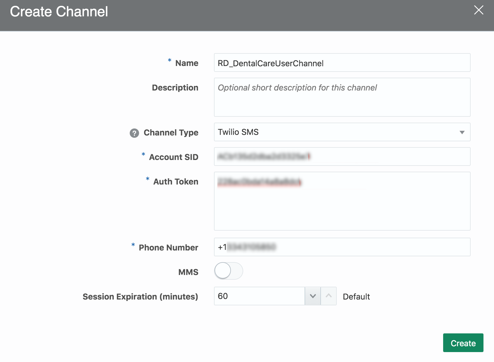
Click Create.
In the Users tab, select your skill from the Route To dropdown list.
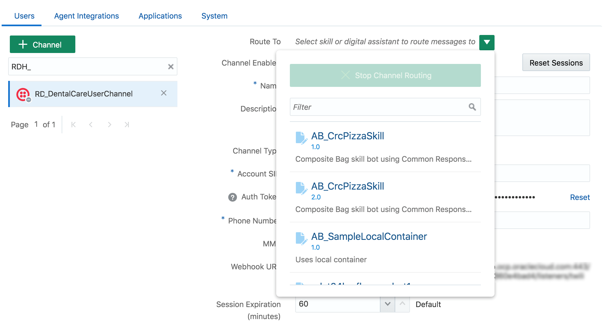
Set the Channel Enabled switch to ON to enable the channel.
Make a note of the webhook URL. You'll use this URL to configure Twilio messaging in the Twilio console in the next section.
Configure Twilio Messaging in the Twilio Console
In this section, you’ll configure SMS messaging.
Go to the Twilio dashboard at https://www.twilio.com/console,
click All Products & Services ,
and then click # Phone Numbers.
Click Active Numbers, and then select your Twilio number.
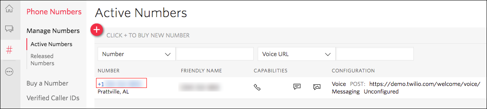
In the Configure tab, scroll down to the Messaging section and set the A MESSAGE COMES IN field
to the webhook URL that you obtained when you
created the Twilio SMS user channel in Digital Assistant.
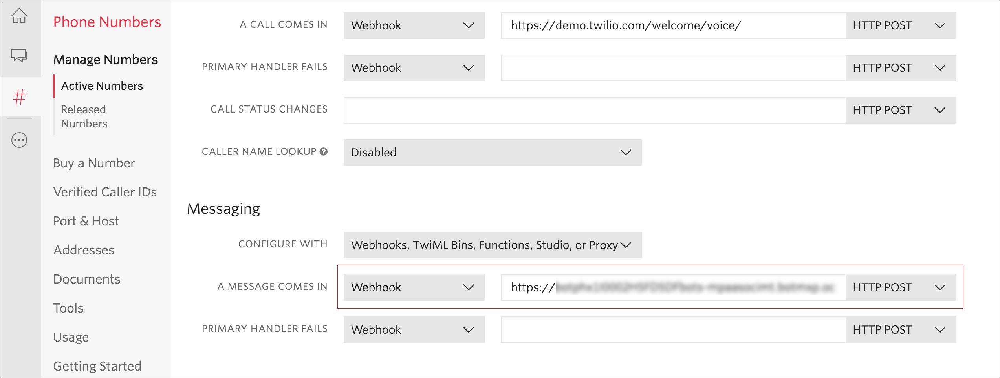
Click Save.
Digital Assistant can now communicate on the Twilio SMS user channel that you created.
Test the Skill Using SMS
You are now ready to test the SMS-based Dental Care skill using the validated caller (that is, the patient).
Using the mobile phone that is emulating the patient, sent an SMS with the following text to your active Twilio number:
Who are you?
After a few seconds, you should receive the following response back:
Sent from your Twilio trial account – Hi, I am the Dental Care appointment reminder bot!
Congratulations! You've confirmed that the SMS channel is working and is routing the request to Dental Care skill.
If you don't get the response, verify that your user channel is enabled, you've provided the correct
account SID and AUTH token, and that you used the user channel's Webhook URL for the Twilio messaging Webhook URL.
Also verify that your application channel is enabled.
Use Postman as an External Application
Now you need to setup an SMS Reminder Management application, which sends reminders to the patients.
Once a user receives the SMS notification, the user can reply back to confirm, reschedule, or cancel the
appointment a using free-flowing text message.
You'll use the Postman REST client to initiate the conversation. Postman will send an appointment reminder
to the Dental Care skill in Digital Assistant, which then will send an SMS notification to the patient's
mobile number. In order to achieve this, the external application needs to know the following information:
Inbound URL and secret from your application channel
Twilio SMS user-channel name
The verified phone number of the patient who'll receive the SMS
Skill's payload type, which is msgreminder in this tutorial
To import the AIC HOL collection into Postman, click Import, and then drop or choose the
AIC-postman-collection.json file.
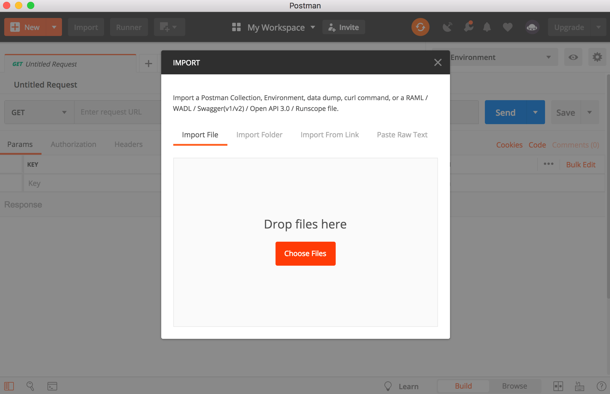
If you don't see the imported collection, click the Collections tab and then enter AIC HOL
in the search field.
Expand AIC HOL, and then select POST SMSReminderAppRequest.
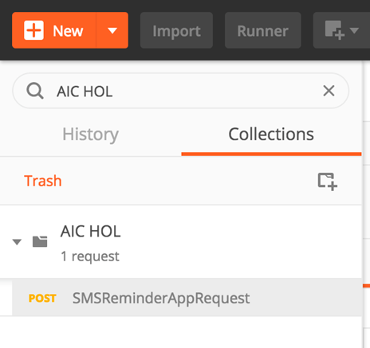
Observe the URL, headers, body, and
pre-request script.
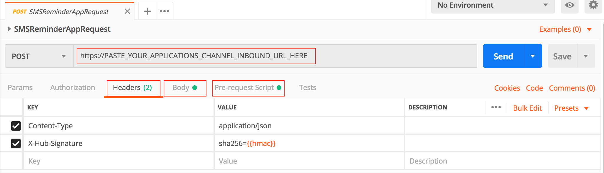
You now need to update the POST request based on your user and application channel configurations.
In the URL field, replace PASTE_YOUR_APPLICATIONS_CHANNEL_INBOUND_URL_HERE with
your application channel's inbound URL.
Click the Pre-request Script tab and replace
ENTER_YOUR_APPLICATION_CHANNEL_SECRET_KEY with your application channel's secret key.
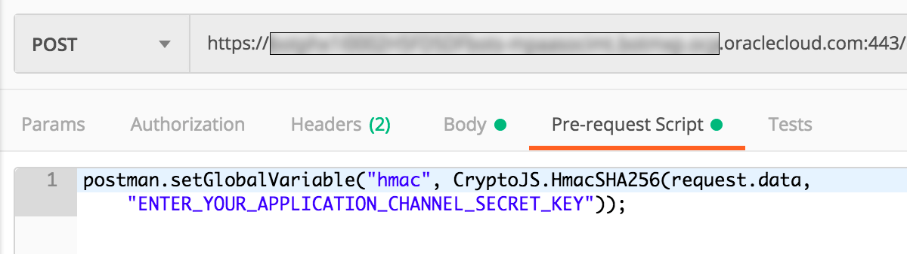
Click the Body tab and replace the following values:
ENTER_PATIENT_MOBILE_NUMBER_HERE: The registered mobile number for the patient.
Remember that this is the number that you validated in Twilio as Verified Caller ID. (that is,
the patient's mobile number).
ENTER_TWILIO_USER_CHANNEL: The name of your Twilio SMS user channel, which is something
like <your_initials>_DentalCareUserChannel.
ENTER_PATIENT_NAME: The name to use for the patient's name.
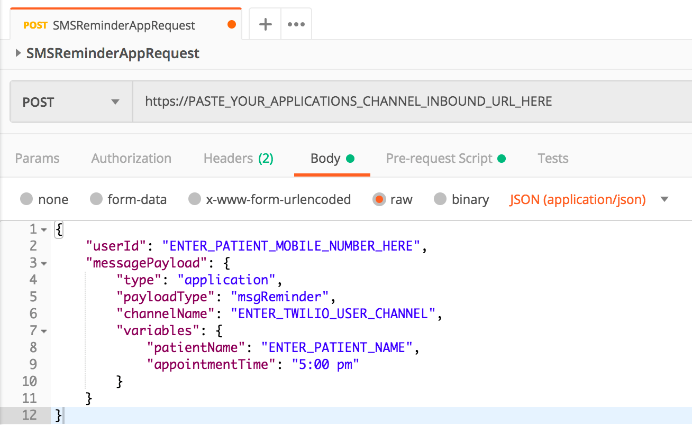
Click Send, and then observe the Status value.
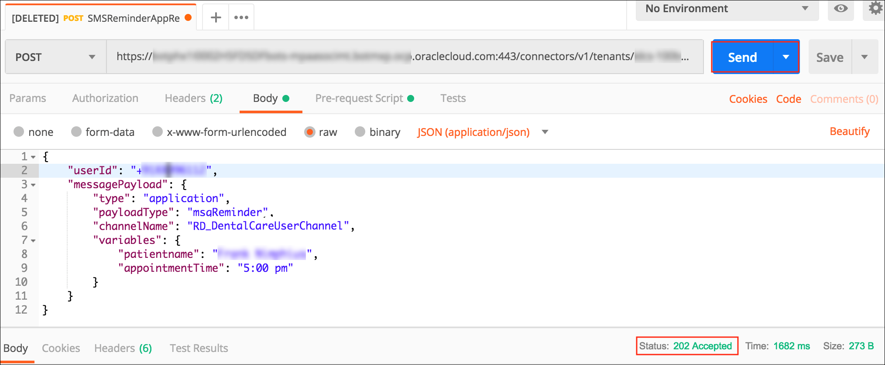
Status 202: Accepted indicates that the request was sent successfully for further processing.
You'll get this status if you set up the POST request correctly.
Status 403: Forbidden indicates that access to the requested URL is forbidden.
In this case, check if you've provided the correct secret key in the Pre-request Script tab.
Status 404: Not Found indicates that the POST URL might be incorrect. Ensure that you've
provided the correct inbound URL. Also ensure that the application channel is enabled.
After a successful POST is sent, you'll receive an SMS notification on the mobile phone for the patient's
number. It will be something like:
Hi Joe Doe, your next Dental Care appointment is scheduled for 5:00 PM.
Please reply to this message to confirm, cancel, or postpone your appointment.
You can reply to this message to either confirm, postpone, or cancel. For example, you can enter
one of the following messages:
Cancel it
I will come
Change the slot
Confirmed
Based on the user input, the skill will either confirm, postpone, or cancel the appointment.
 Send Reminders Using Application-Initiation Conversations
Send Reminders Using Application-Initiation Conversations Before You Begin
Before You Begin Set Up the Dental Care Skill
Set Up the Dental Care Skill Prepare Your Skill for an Application-Initiated Conversation
Prepare Your Skill for an Application-Initiated Conversation to open the dialog flow editor.
to open the dialog flow editor. Set Up Twilio
Set Up Twilio Set Up Digital Assistant Channels
Set Up Digital Assistant Channels Configure Twilio Messaging in the Twilio Console
Configure Twilio Messaging in the Twilio Console Test the Skill Using SMS
Test the Skill Using SMS Use Postman as an External Application
Use Postman as an External Application  Want to Learn More?
Want to Learn More?